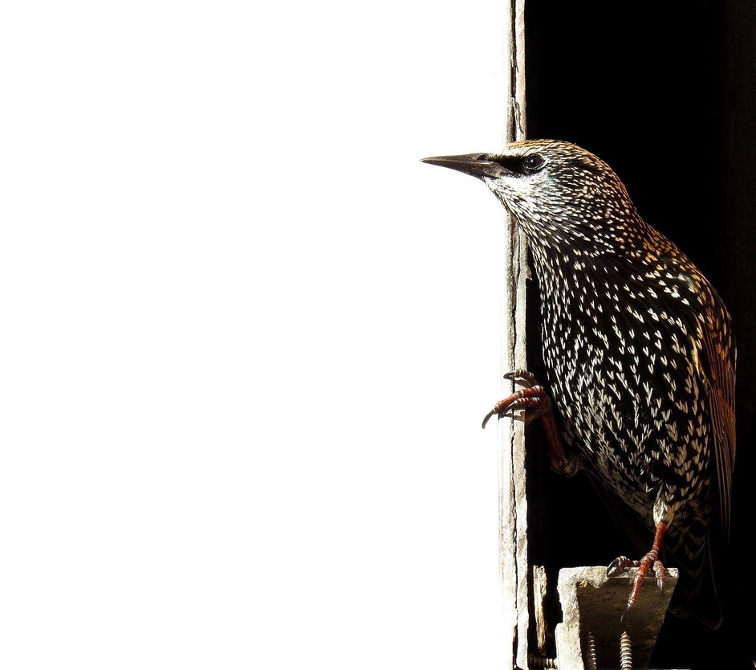

Google Scholar
Life @ Einstein
Work & Coding
Robert Ortega
MD-PhD trainee, Albert Einstein College of Medicine

Hello and welcome!
Bio
: First year MD-PhD trainee at Albert Einstein College of Medicine.
Current scientific interests
: Statistical genetics and prodromal phase biomarkers.
Current medical interests
: Neurology, psychiatry, internal medicine, pathology.
Email
: roberto.ortega[at]einsteinmed.edu
Education:
El Paso Community College: AA
University of Texas at El Paso (BS, MS: Mathematical Statistics)
Albert Einstein College of Medicine (MSTP): MD, PhD